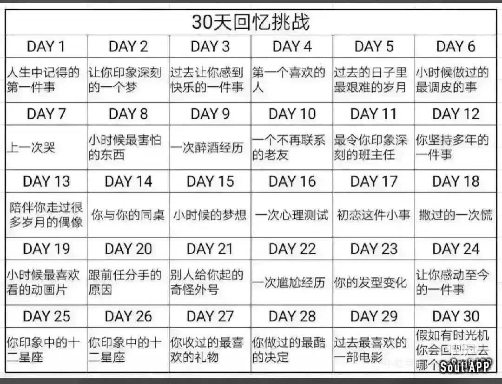

千与千弥
@qian_YuqianMi
day6
我爸在跟我玩（好像才小学？甚至可能是幼儿园），然后我腿蹬了一下把我爸眼镜踢断了，，
其实这个不算调皮吧算意外伤人（）
千千一直都很乖没怎么调过皮（真的。）在我爸妈嘴里我是绝对的天使宝宝，史诗级震撼听话。（所以我现在变成这副鬼样了）

千与千弥
@qian_YuqianMi
想玩一下这个₍ᐢ..ᐢ₎♡ https://t.co/lnJOzf2O0x